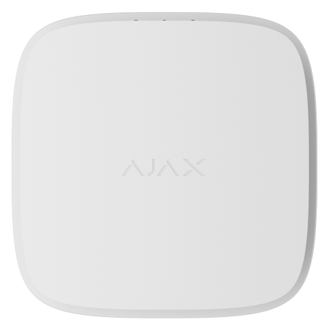
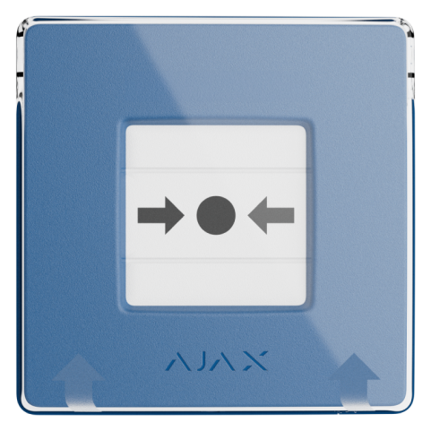

Catalogue
Incendie
Détecteurs de fumée, de chaleur et de monoxyde de carbone. L’étude tient compte de votre site.

39 références








Aucune référence ne correspond à ces critères.
Besoin d’aide pour composer votre système ?
Étude gratuite · Partenaire agréé · Toute l’île · Intervention sur site.